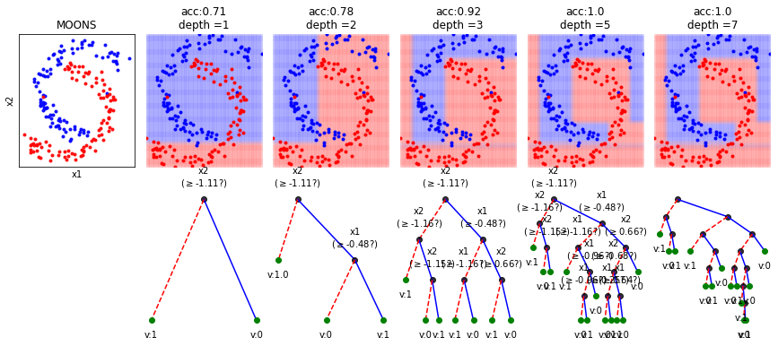

Classification Trees: Depth & Decision boundaries using SpKit
Contents
Homepage: https://spkit.github.io
Nikesh Bajaj : http://nikeshbajaj.in
Classification Trees: Depth & Decision boundaries using SpKit¶
Note:In this notebook, we show, how the depth of a decision tree affect the decision boundries for classification. With toy examples of simulated 2D datasets, plotting the decsison boundries allows us to understand the overfitting of tree. You will be able to observe that by lowering the depth of tree, you can minimize the overfitting. Higher depth of a tree create a much complex decision boundry to classify each example in training correctly, as a consequences, it fails to generalize for test data. The take away message of this notebook is be careful to choose hyperparameter max_depth for a tree before training.
Table of Contents
Libraries & Functions¶
import numpy as np
import matplotlib.pyplot as plt
import spkit
from spkit.data import dataGen as ds
from spkit.ml import ClassificationTree
spkit.__version__
'0.0.9.4'
np.random.seed(100) # just to ensure the reproducible results
def get2DGrid(X,density=100):
mn1,mn2 = np.min(X,axis=0)
mx1,mx2 = np.max(X,axis=0)
x1 = np.linspace(mn1,mx1,density)
x2 = np.linspace(mn2,mx2,density)
x1,x2 = np.meshgrid(x1,x2)
Xt = np.c_[x1.flatten(),x2.flatten()]
return Xt
def plotXy(X,y,ax=None,m='o',alpha=0.2):
clr = ['b','r','g','y','m','k']
cls = np.unique(y)
for i in range(len(cls)):
c = cls[i]
ax.plot(X[y==c,0],X[y==c,1],m+clr[i],alpha=alpha)
Toy examples : Grid¶
dType=['MOONS', 'GAUSSIANS', 'LINEAR', 'SINUSOIDAL', 'SPIRAL']
plt.figure(figsize=(15,10))
for k in range(len(dType)):
dtype = dType[k]
X,y,_ = ds.create_dataset(N=200, Dtype=dtype, noise=0.01)
Xt = get2DGrid(X,density=80)
mns = np.min(Xt,axis=0)
mxs = np.max(Xt,axis=0)
depths = [1,2,3,5,7]
N = len(depths)+1
plt.subplot(5,N,k*N+1)
plotXy(X,y,ax=plt,m='.',alpha=0.9)
plt.xticks([])
plt.yticks([])
plt.ylabel(dtype)
for i in range(len(depths)):
d = depths[i]
clf = ClassificationTree(max_depth=d)
clf.fit(X,y,verbose=0,feature_names=['x1','x2'])
yt = clf.predict(Xt)
yp = clf.predict(X)
acc = np.around(np.mean(y==yp),2)
plt.subplot(5,N,k*N+i+2)
#clf.plotTree(show=False,DiffBranchColor=True,scale=True,showtitle=False, showDirection=False,legend=False)
#plt.subplot(2,1,2)
plotXy(Xt,yt,ax=plt,m='o',alpha=0.02)
plotXy(X,y,ax=plt,m='.',alpha=0.99)
plt.xlim([mns[0],mxs[0]])
plt.ylim([mns[1],mxs[1]])
plt.axis('off')
if k==0: plt.title('depth ='+str(d))
#plt.subplot(2,N,N+i+2)
#clf.plotTree(show=False,DiffBranchColor=True,scale=True,showtitle=False, showDirection=False,legend=False)
plt.subplots_adjust(left=None, bottom=None, right=None, top=None, wspace=0.05, hspace=0.05)
#plt.savefig('trees.png',dpi=300,transparent=False,bbox_inches='tight',pad_inches=0.01)
plt.show()
Toy Examples with tree with different depth¶
dType=['MOONS', 'GAUSSIANS', 'LINEAR', 'SINUSOIDAL', 'SPIRAL']
for k in range(len(dType)):
dtype = dType[k]
X,y,_ = ds.create_dataset(N=200, Dtype=dtype, noise=0.01)
Xt = get2DGrid(X,density=80)
mns = np.min(Xt,axis=0)
mxs = np.max(Xt,axis=0)
depths = [1,2,3,5,7]
N = len(depths)+1
plt.figure(figsize=(15,6))
plt.subplot(2,N,1)
plotXy(X,y,ax=plt,m='.',alpha=0.9)
#plt.axis('off')
plt.xticks([])
plt.yticks([])
plt.xlabel('x1')
plt.ylabel('x2')
plt.title(dtype)
for i in range(len(depths)):
d = depths[i]
clf = ClassificationTree(max_depth=d)
clf.fit(X,y,verbose=0,feature_names=['x1','x2'])
yt = clf.predict(Xt)
yp = clf.predict(X)
acc = np.around(np.mean(y==yp),2)
plt.subplot(2,N,i+2)
#clf.plotTree(show=False,DiffBranchColor=True,scale=True,showtitle=False, showDirection=False,legend=False)
#plt.subplot(2,1,2)
plotXy(Xt,yt,ax=plt,m='o',alpha=0.03)
plotXy(X,y,ax=plt,m='.',alpha=0.99)
plt.xlim([mns[0],mxs[0]])
plt.ylim([mns[1],mxs[1]])
plt.axis('off')
plt.title('acc:'+str(acc)+'\ndepth ='+str(d))
plt.subplot(2,N,N+i+2)
if d>5:
clf.plotTree(show=False,showtitle=False,legend=False,showNodevalues=False, showThreshold=False)
else:
clf.plotTree(show=False,showtitle=False,legend=False)
plt.subplots_adjust(left=None, bottom=None, right=None, top=None, wspace=0.1, hspace=None)
#plt.savefig('figures/tree_'+dtype.lower()+'3.png',dpi=300,transparent=False,bbox_inches='tight',pad_inches=0.01)
plt.show()
